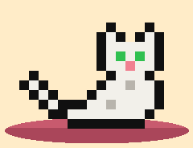

The cat LexOS is named after.
Lex lives on the taskbar: he walks along it, sits down, curls up and sleeps. A click - and he meows. A right click on him: feed him (a bowl), pet him (a heart and a purr), play with him (he chases the pointer), or ask how he is.
Leave him hungry or alone for long, and he's sad: he stops walking and just sits there. He remembers it, too - even after the machine was off.
In the terminal: lex, lex hello!, neofetch.